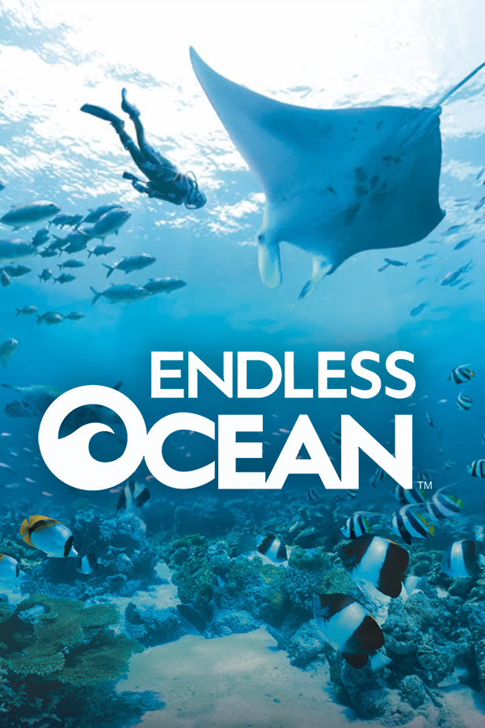

|  | |
| Playtime | Not Played |
| Last Activity | Never |
| Added | 4/29/2025 6:57:43 |
| Modified | 4/29/2025 23:24:10 |
| Completion Status | Not Played |
| Library | Playnite |
| Source | |
| Platform | Nintendo Wii |
| Release Date | 8/2/2007 |
| Community Score | 76 |
| Critic Score | 72 |
| User Score | |
| Genre | Adventure |
| Developer | Arika |
| Publisher | Nintendo |
| Feature | Multiplayer Single Player |
| Links | Wikipedia Endless Ocean Official site Official site MobyGames |
| Tag | [People] director: Akira Kurabayashi [People] director: Masaki Tawara [People] producer: Hitoshi Yamagami [People] producer: Ichiro Mihara |
Endless Ocean (known as Forever Blue in Japanese) is a scuba diving adventure game developed by Arika and published by Nintendo for the Wii. It is considered a spiritual successor to Everblue, another scuba diving adventure game series also developed by Arika. It was released in Japan on August 2, 2007, Europe on November 9, 2007, and North America on January 21, 2008, after originally being scheduled for release in October 2007.
A sequel, Endless Ocean 2: Adventures of the Deep was released in Japan on September 17, 2009, in Europe on February 5, 2010, and in North America on February 22, 2010, under the name Endless Ocean: Blue World. A third game in the series, Endless Ocean Luminous, was released on the Nintendo Switch in all regions on May 2, 2024.
In Endless Ocean, the player plays as a scuba diver exploring the Manaurai sea, a fictional sea in the South Pacific, in search of sea life and sunken treasure under the guidance of their assistant, Katherine Sunday. In the sea, they will encounter several marine species, ranging from smaller fish and penguins to whale sharks, manta rays and sperm whales, as well as dolphins and other cetaceans that can be trained to perform certain behaviors and become companions. Species such as sharks are also present; however, they pose no threat to the player. The player also has access to a large aquarium, which they can populate with species they have identified. The sea's various locations provide a means for the player to experience diving, cave diving, deep-water trench exploration, wreck diving, and other activities that might not otherwise be possible in a single real-world setting.
Late in the game, Katherine tells the player that in the past, her father set out in search of a unique whale called the White Mother, but never returned. The player and Katherine set out to find the White Mother, which entails seeking out the four types of whales present in the game, humpback whale, North Atlantic right whale, sperm whale, and blue whale, and placing motion sensors on different points of the map. Eventually, one of the sensors is set off, and the player witnesses the White Mother, a large albino blue whale, as Katherine remembers her father.
The song "Prayer", composed by Secret Garden and performed by Hayley Westenra, is featured in the game and its trailers. Westenra also contributes several other songs, including a rendition of the Maori folk song "Pokarekare Ana". Players can transfer their MP3 music files to an SD card and listen to them while playing. Endless Ocean is the second game on the Wii to use this feature, the first being Excite Truck.
The game was released in Japan on August 2, 2007. On August 10, 2007, Nintendo issued a product recall in after a major bug was found in copies of the game, later re-releasing the game in Japan with the bug removed. The bug caused the screen to go blank and caused the console to freeze when the player put one or more bowmouth guitarfish into the aquarium, which did not affect the exploration mode.
The game received "average" reviews according to the review aggregation website Metacritic. In Japan, Famitsu gave it a score of 10/10, 8/10, 9/10, and 8/10 for a total of 35 out of 40, praising the open-ended exploration aspect of the game, the scale of the play area and its soundtrack.
Endless Ocean had sold at least 50,000 copies in Japan.
A sequel, Endless Ocean 2: Adventures of the Deep was released in Japan under the name Forever Blue: Call of the Ocean on September 17, 2009, and in Europe on February 5, 2010. It was released in North America on February 22, 2010, under the name Endless Ocean: Blue World.
Another entry, Endless Ocean Luminous, was announced on February 21, 2024, and was released on Nintendo Switch on May 2, 2024.